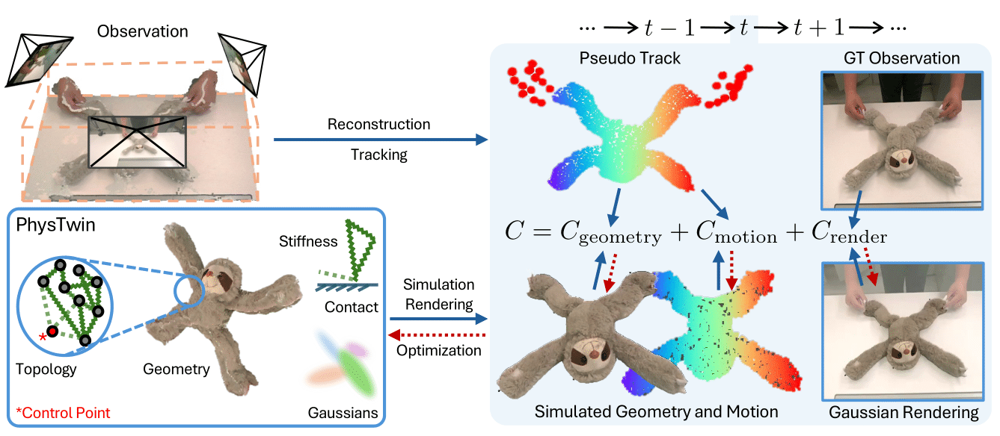

Reconstruct. Resimulate. Predict.
Our PhysTwin can effectively reconstruct & resimulate visual observations and make precise future predictions
for different types of objects under various interactions, whether with one hand or both hands.
Abstract
Creating a physical digital twin of a real-world object has immense potential in robotics, content creation, and XR. In this paper, we present PhysTwin, a novel framework that uses sparse videos of dynamic objects under interaction to produce a photo- and physically realistic, realtime interactive virtual replica. Our approach centers on two key components: (1) a physics-informed representation that combines spring-mass models for realistic physical simulation, generative shape models for geometry, and Gaussian splats for rendering; and (2) a novel multi-stage, optimization-based inverse modeling framework that reconstructs complete geometry, infers dense physical properties, and replicates realistic appearance from videos. Our method integrates an inverse physics framework with visual perception cues, enabling high-fidelity reconstruction even from partial, occluded, and limited viewpoints. PhysTwin supports modeling various deformable objects, including ropes, stuffed animals, cloth, and delivery packages. Experiments show that PhysTwin outperforms competing methods in reconstruction, rendering, future prediction, and simulation under novel interactions. We further demonstrate its applications in interactive real-time simulation and model-based robotic motion planning.
PhysTwin Framework

Overview of our PhysTwin framework: the core representation includes geometry, topology, physical parameters, and Gaussian kernels. To optimize PhysTwin, we minimize the rendering loss and the discrepancy between simulated and observed geometry/motion.
Visualization of Results (Rendering & Tracking)
Visualization Choice
Scenarios
Comparison with Prior Work
Applications (All Real-Time 1x)
Real-time Interactive Simulation with Keyboard Control
Real-time Interactive Simulation with Robot Teleoperation
Model-based Robot Manipulation Planning
Acknowledgement
This work is partially supported by the Toyota Research Institute (TRI), the Sony Group Corporation, Google, Dalus AI, the DARPA TIAMAT program (HR0011-24-9-0430), the Intel AI SRS gift, Amazon-Illinois AICE grant, Meta Research Grant, IBM IIDAI Grant, and NSF Awards #2331878, #2340254, #2312102, #2414227, and #2404385. We greatly appreciate the NCSA for providing computing resources. This article solely reflects the opinions and conclusions of its authors and should not be interpreted as necessarily representing the official policies, either expressed or implied, of the sponsors. We also thank Mandi Zhao for the inspiring discussions and Bingjie Tang for helping with figure polishing.
BibTeX
@article{jiang2025phystwin,
title={PhysTwin: Physics-Informed Reconstruction and Simulation of Deformable Objects from Videos},
author={Jiang, Hanxiao and Hsu, Hao-Yu and Zhang, Kaifeng and Yu, Hsin-Ni and Wang, Shenlong and Li, Yunzhu},
journal={ICCV},
year={2025}
}